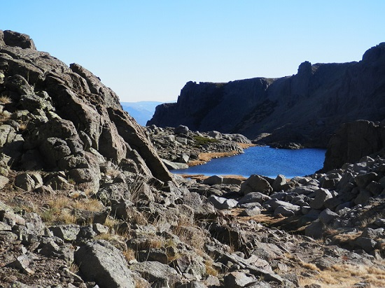
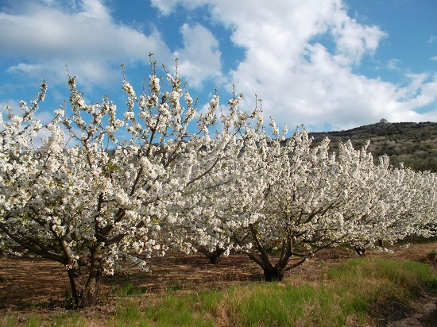
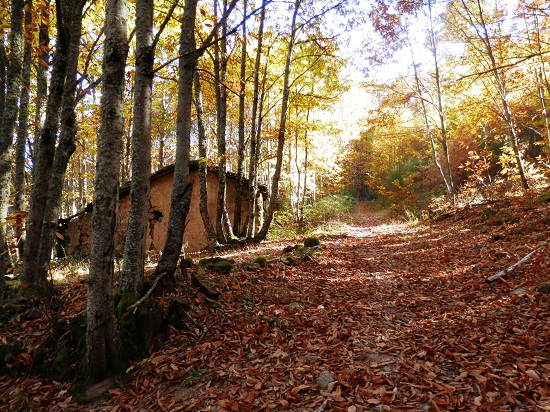
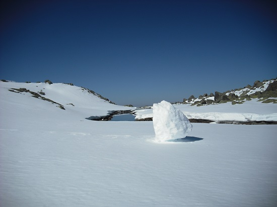
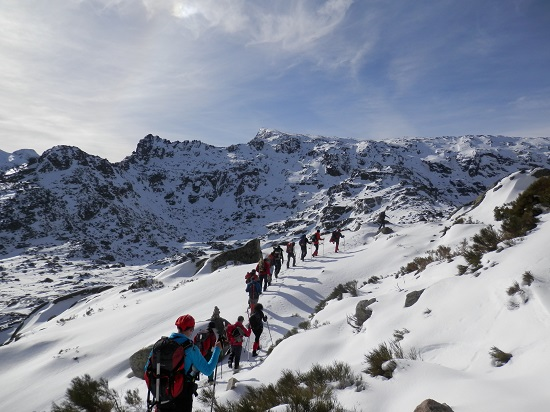
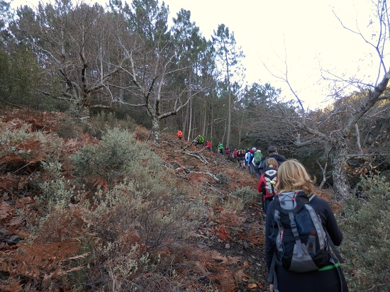
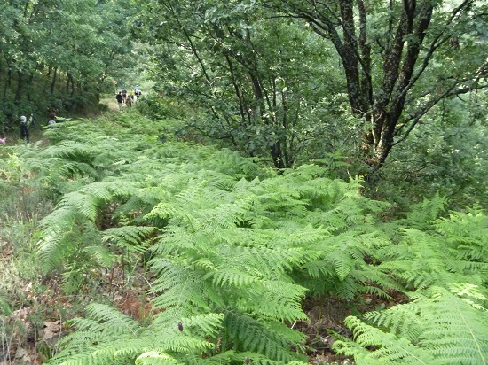
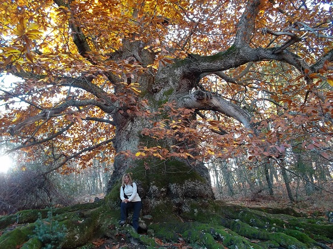
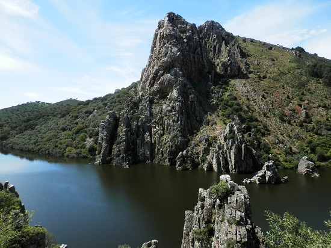

Disfruta de las mejores Rutas
-

Calvitero-Laguna el Trampal
Desde Béjar debe ascenderse a Candelario y de aquí a la Plataforma del Travieso.
Desde aquí comienza la excursión a pie.
Subiendo por un camino marcado con hitos se llega al Calvitero,
donde se levanta el monumento a la Virgen de El Castañar.
Tomando dirección sur, en dirección a la Ceja del Trampal,
desde aquí se tomará el camino que desciende en zig-zag,
en dirección a las Lagunas del Trampal.
-

Cerezo en Flor
Lo ideal para ver la floración es hacer un recorrido por todos los pueblos que
componen el Valle del Jerte, así se puede disfrutar de diferentes perspectivas.
Ruta circular por la sierra, en coche: Valdastillas, Piornal, Barrado, Cabrero,
Casas del Castañar, El Torno y Rebollar.
Ruta lineal paralela al río Jerte, siguiendo la N-110: Navaconcejo,
Cabezuela del Valle, Jerte, Tornavacas y Puerto de Tornavacas.
-

Otoño Mágico
Tras la primera subida, hay un prolongado descenso que atraviesa bosques de castaños,
paisaje de prados bordeados por caminos de herradura, la zona más frondosa de nuestro
recorrido,hasta la llegada a Hervás por el puente de la Fuente Chiquita.
Seguimos hacia Gargantilla, atravesando el Puente del Monte, y tras un pequeño tramo
de carretera nos adentramos en el Castañar Gallego y en el Castañar del Duque, para
arribar a la parte alta de Gargantilla, entre huertos de cerezos y ciruelo,
y continúa por una paisaje típico de dehesa, la llegada a Segura de Toro es espectacular.
-

Hoyamoros-Los Hermanitos
Ruta de montaña por las Sierras de Candelario y Béjar,
partiendo de la Dehesa de Candelario y subida hacia los Dos Hermanitos,
y posteriormente a la cumbre de El Torreón.
La bajada se hace por el circo glaciar de Hoya Moros.
-

Navalperal-Bohoyos
-

Ovejuela-Robledillo de Gata
Esta preciosa ruta trascurre por GR10,
y si bien se puede realizar ida y vuelta la dureza es grande,
por lo que recomendamos usar un coche escoba y siempre la subida realizarla
por el valle de Ovejuela, que es mucho más dulce y trascurre por arroyos
y zonas de sombra que agradeceremos en las horas de calor.
-

Carlos V
Se sale de Tornavacas ascendiendo hasta el collado de las Losas,
bajamos hasta el Puente Nuevo que atraviesa la Garganta de la Serrá,
se asciende luego al collado de las Yeguas,
bajando por la Garganta Yedrón hasta Jarandilla de la Vera.
El recorrido esta señalado como Pr-cc-1.
-

Ruta por los Ibores
Ribereando desde Guadalupe por el río Guadarranque iniciamos nuestra ruta por
el río Guadarranque iniciamos nuestra ruta que nos llevará hasta Navatrasierra,
e cuyos alrededores se contempla un atractivo paisaje propio de las serranías
de los Ibores,
al cual se suma otro encanto más,
el de estar situada la población entre la sierra de Valdelacasa y la de Altamira.
-

Monfrague
Monfragüe se encuentra aproximadamente en el centro de la provincia de Cáceres,
en el triángulo que formarían las conocidas ciudades de Plasencia, T rujillo y Cáceres.
Su eje vertebrador lo constituye el río Tajo a su paso por suaves montañas rodeadas
de extensas dehesas.
Monfragüe, con 18.396 hectáreas, fue el primer espacio protegido de Extremadura.
tras varios años de lucha para evitar que las plantaciones de eucaliptos aterrazaran y
eliminaran el matorral y bosque autóctono, hábitat de gran cantidad de fauna amenazada.